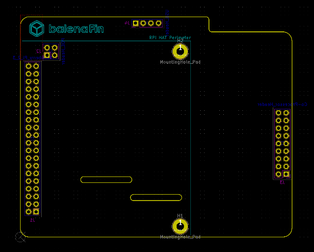

This project template is the basis of a hat board for the
balenaFin v1.1
This base project includes a PCB edge defined as the same
size as the balenaFin's PCB with the connectors for the Raspberry Pi
and Coprocessor placed correctly to align the two boards.
Additionally, the USB and PoE headers are connected as well.
The final PCB looks like the following:

(c)2020 Balena.